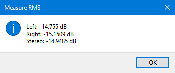

Measure RMS
The primary purpose of this plugin is to serve as an example for Nyquist Plugin writers, of how translations may be added to plugins. All other plugins that are shipped with Audacity have translations compiled into the main application, but this is not practical for additional plugins that are not shipped with Audacity.
The translation mechanism available for "third party" plugins is limited to translating messages only, and not the GUI. This plugin includes translations for 5 languages, though any number of languages may be added. Documentation for adding translations to Nyquist plugins can be found in the Audacity wiki.
- Accessed by:
- 
This is a simple analyzer which measures the RMS level of the selected audio.
It is similar to , but without all the additional accessibility functionality.
The example above is the measurement of a typical stereo track where what is measured is:
- left channel
- right channel
- the stereo signal
If you use this analyzer on a mono track you will just get a single figure shown.